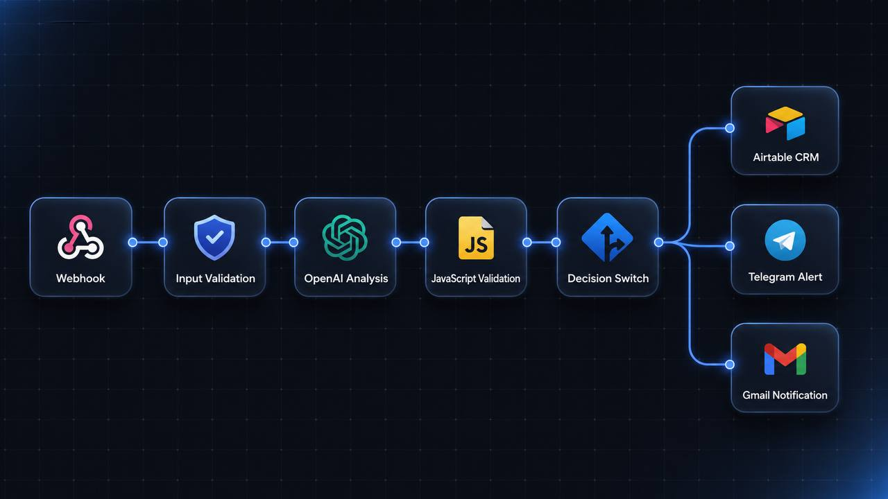
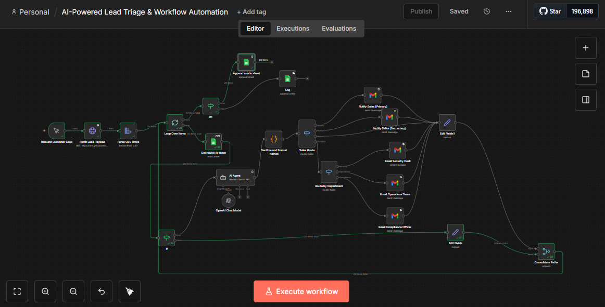

Case Study / AI Lead Qualification System
AI Lead Qualification System
A production AI workflow that qualifies inbound real estate enquiries, validates every AI decision, and routes qualified leads into the CRM without manual review.



The Problem
Real estate enquiries were arriving faster than they could be qualified.
Every enquiry required manual review before an agent could respond. Low-quality leads consumed valuable time, high-quality opportunities were delayed, and inconsistent decision making reduced sales efficiency.
Before
- Every enquiry reviewed manually.
- No consistent qualification criteria.
- Agents wasted time on cold leads.
- High-value prospects waited too long.
Goal
- Automatically understand lead intent.
- Score enquiry quality.
- Validate AI output before execution.
- Route qualified leads directly into CRM.
AI reasons. Code decides.
The workflow was designed so the language model performs reasoning, while deterministic business logic controls every critical decision. This prevents unreliable AI output from directly affecting production systems.
Webhook Trigger
Receives incoming enquiries from external sources.
Validation Layer
Sanitises inputs and rejects malformed requests before AI processing.
AI Reasoning
The LLM classifies intent, extracts structured data, and evaluates lead quality.
Deterministic Checks
JavaScript validates AI output against strict business rules before execution.
CRM Routing
Qualified leads are automatically written into the CRM pipeline.
Alerts & Logging
High-priority enquiries trigger notifications while every workflow run is logged for traceability.
Workflow
End-to-end workflow.
Every enquiry follows a deterministic pipeline before reaching the sales team. The AI never interacts directly with production systems without validation.

Lead Received
Customer submits a property enquiry through the workflow.
Input Validation
Incoming data is sanitised before AI processing begins.
AI Qualification
The language model classifies intent, extracts structured information, and scores the enquiry.
Business Rule Validation
JavaScript validates every AI decision against deterministic business rules.
CRM Routing
Qualified leads are written into Airtable while priority enquiries generate Telegram alerts.
Logging
Every execution is recorded for observability and future debugging.
Design decisions that made the system production-ready.
Building the workflow was only half the job. The real challenge was making it reliable enough to operate without constant human supervision.
AI reasons. Code decides.
The LLM performs classification, while JavaScript validates every decision before execution.
Structured outputs
The model returns predictable JSON instead of free text, allowing deterministic downstream automation.
Prompt injection protection
User input is isolated from system instructions to reduce prompt manipulation risks.
Fail-safe validation
Invalid or incomplete AI responses never reach the CRM. The workflow exits safely instead.
Observability
Each workflow execution is logged, making failures traceable and debugging significantly easier.
Scalable architecture
The workflow is modular, allowing additional channels, CRMs, or scoring rules without redesigning the system.
What this project taught me.
LLMs should assist, not control.
AI performs best when deterministic code validates every critical decision before execution.
Reliability is a feature.
Retry logic, validation, and observability matter just as much as the AI model itself.
Good architecture scales.
Separating AI reasoning from workflow execution makes future improvements far easier.
Outcome
The result.
The completed system reduced manual lead triage by automatically qualifying enquiries, validating AI decisions before execution, routing qualified leads into the CRM, and notifying the sales team of high-priority opportunities. The architecture was designed to be reliable, observable, and easily extended as business requirements evolved.